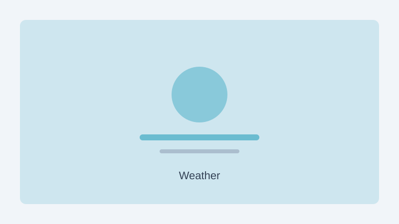

NParks has issued a dry weather advisory for parks in northern Singapore, including Bishan-Ang Mo Kio Park and Lower Seletar Reservoir Park. Prolonged stretches without significant rain have left grass patches browner and trail surfaces drier than usual.
Visitors are reminded not to use open flames, including portable stoves and barbecue pits outside designated areas. Smoking is prohibited in most park zones, and rangers will step up patrols to ensure compliance during the advisory period.
Park users are encouraged to carry water and take breaks in shaded rest areas, especially during mid-afternoon hours. NParks said it will lift the advisory once rainfall returns to normal levels over the affected areas.